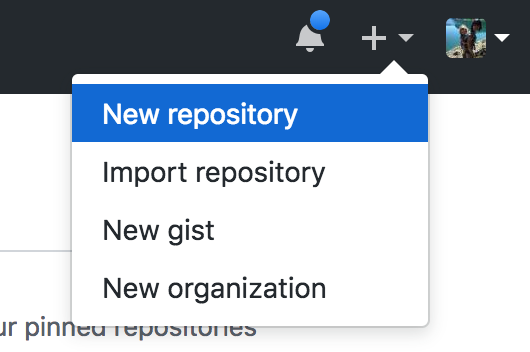
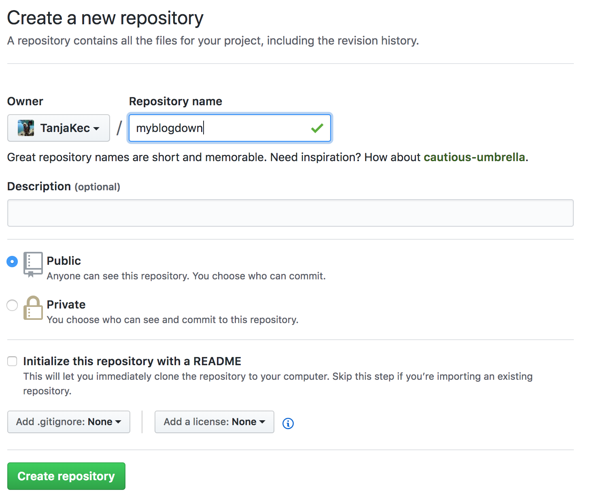
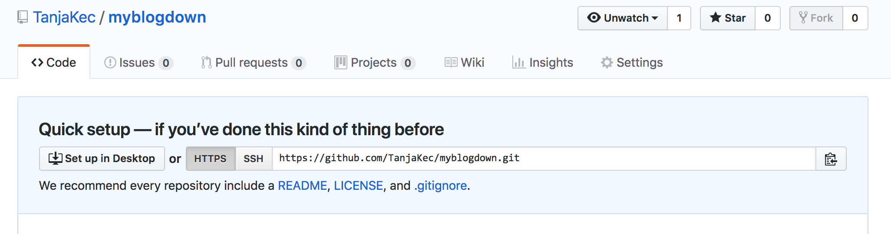
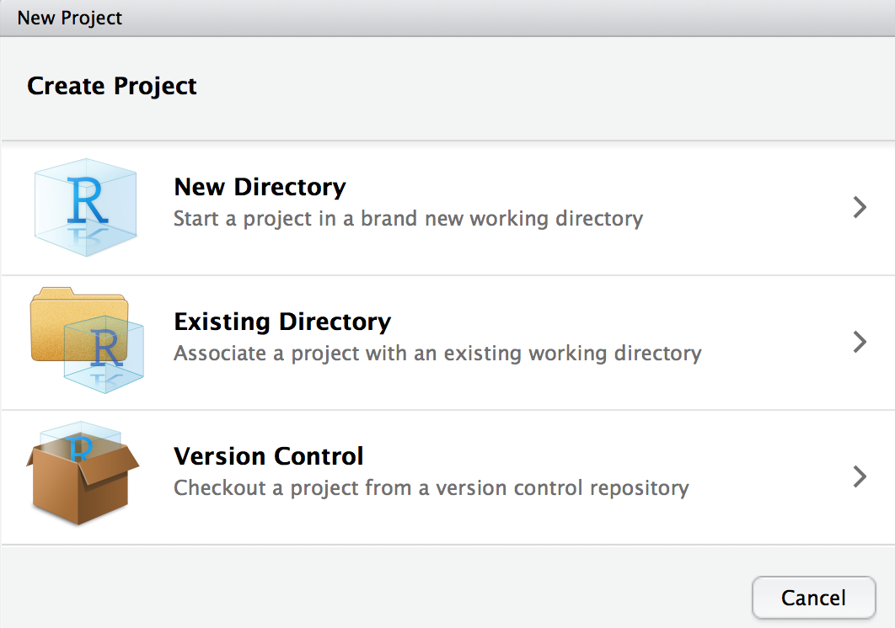
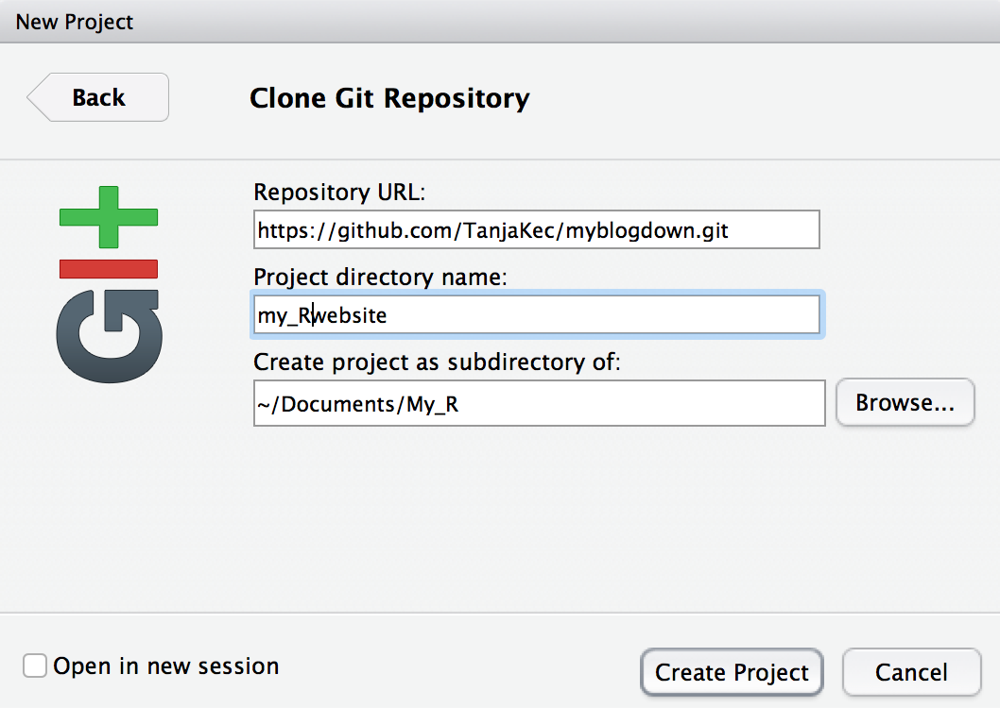

RMarkdown
Reproducible Research?! What is it? ü§∑Ô∏è
Have you ever reproduced someone else’s research analysis?
How about reproducing your own old work? What tools did you use?
Do you know how to reproduce your collaborator’s work? Was it hard or easy?
How would you go about extending the analysis further?
If you notice a data error how easy would it be to re-create the analysis?
Your collaborater is no longer available?
What is R Markdown?
Wizardry.
Alison Hill from R Markdown Anatomy
R Markdown can help generate:
- HTML documents
- Notebooks in which you’ve run code chunks individually
- PDFs that you can print out to follow along physically with the course
- This entire R course website
It enables you to:
- save and execute code and display its output
- create high quality reports that could include LaTeX equations
What is great about R Markdown documents is that they are fully reproducible and support many static and dynamic output formats, to name a few: PDF, HTML, MS Word, Beamer… You can incorporate narrative text and code of your data analysis to produce an elegantly formatted story telling journey.
It is a variant of Markdown that has embedded R code chunks (denoted by three back ticks), to be used with knitr to make it easy to create reproducible web-based reports.
R Markdown is a plain text file that has the extension .Rmd
To use R Markdown you will need to install the package from CRAN and load it with:
install.packages("rmakdown", repos = "http://cran.us.r-project.org")
suppressPackageStartupMessages(library(rmarkdown))
RMarkdown Appreciation
Before we start learning about RMarkdown let us do an exercise of RMarkdown appreciation üòá
üëâ Go to the following GitHub repo to download the material: https://github.com/TanjaKec/RMarkdown4RR
Inside the data folder you will find the follwoing csv files:
- athlete_events.csv
- noc_regions.csv
- exyu_olympic.csv
Split into groups of three and produce a Word document or a PowerPoint presentation to present your finding for the following problem:
Open the exyu_olympic.csv file in the Excel and try to:
- Find the number of medals per each team?
- Find the number of medals per each team for the last Rio games?
- Visualise data about number of female and male athletes from ex YU countries available in the data set.
We will work on this for the next 20 minutes. üïüüò¨
We already have the R code that would provide the results for those questions. üëÜüòÖ
Open the RMarkdown4RR.Rproj file. Once you get RStudio up and running for the given project click on the “R/script1.R” file. üëèüëèüëè
The question we have now is: Can we put this into a document or a presentation? ü§î Of course we can, but we need to learn how to do it. ü§ì
Starting with RMarkdown
Task 1:
Open the file RMarkdown_Intro.Rmd
Change the title of the Markdown Document from
My First Markdown DocumenttoRMarkdown Introduction.Click the “Knit” button to see the compiled version of your sample code.
Congratulations! You‚Äôve just Knitted your first Rmd document!!!! üëçüòÉ
Basic Text editing
Task 2: Let’s format this document further by
Changing the author of the document to your own name
Rewriting the first sentence of the document to say “This is my first R Markdown document.”
Recompiling the document so you can see your changes
Adding a link
You can turn a word into a link by surrounding it in hard brackets: [ ] and then placing the link behind it in parentheses: ( ), like this:
[RStudio](www.rstudio.com)
Task 3: Make GitHub in the following paragraph link to https://github.com/TanjaKec/RMarkdown4RR
Text formatting
To embed formatting instructions into your document using Markdown, you would surround text by:
one asterisk to make it italic: italic
two asterisks to make it bold: bold and
backticks to make it monospaced:
monospaced.
To make an ordered list you need to place each item on a new line after a number followed by a period followed by a space: 1. order list 2. second item
üí°! Note that you need to place a blank line between the list and any paragraphs that come before it.
Task 4:
- Make the following paragraph in your Rmd document look like this:
When analysing data,… The variables can be one of two broad types:
1) Attribute variable: has its outcomes described in terms of its characteristics or attributes;
2) Measured variable: has the resulting outcome expressed in numerical terms.
- Make the word Knit in the following paragraph italic.
Embedding the R code
To embed an R code chunk you would use three back ticks:
```{r}
chunk of code
```
Task 5: Replace the cars data set with the gapminder data set. Don’t forget to load gapminder package using library(gapminder).
Prevent printing of the R code
You can also embed plots by setting echo = FALSE to the code chunk to
prevent printing of the R code that generates the plot:
```{r, echo=FALSE}
chunk of code
```
Task 6: Replace the base boxplot of mpg vs. cyl by a ggplot’s boxplot to examine a relationship between continent and lifeExp (remember to use some of the dplyr functions too!).
suppressPackageStartupMessages(library(dplyr))
library(ggplot2)
# ggplot boxplot
ggplot(gapminder, aes(x = continent, y = lifeExp)) +
geom_boxplot(outlier.colour = "hotpink") +
geom_jitter(position = position_jitter(width = 0.1, height = 0),
alpha = .2) +
labs (title= "Life Exp. vs. Continent",
x = "Continent", y = "Life Exp.") +
theme(legend.position = "none",
panel.border = element_rect(fill = NA,
colour = "black",
size = .75),
plot.title=element_text(hjust=0.5))
Adding LaTex equations
Finally, if you wish to add mathematical equations to your Markdown document you can easily embed LaTeX math equations into your report.
To display equation in its own line it needs to be surrounded by the double dollar symbol
$$ y = a + bx $$,
or to embed an equation in line within the text you would use only one dollar symbol: $y = a + bx$.
Task 7: Display the equation in the Including Mathematical Equations paragraph into its own line.
Congratulations! You have got the basics to start creating your own fabulous dynamic documents‚Ķ !!!! üëçüòÉ
Taking a Step Further
Now you’ve got the basics of rmarkdown we will move onto editing more sophisticated features of your dynamic document.
When creating an HTML document from R Markdown, you need to specify the HTML document output format in the YAML metadata of your document. You can learn more about it by checking this chapter of R Markdown: The Definitive Guide book.
Let us go through the next set of prepared .rmd files in your RMarkdown4RR project folder.
Do you remember our RMarkdown Appreciation exercise? üòÉ
There is a list of files you shoul open and knit to see what are the features incorporated into the documents and to learn how it is done.
File
01_rmdApprec.Rmdincorporates the R code given inR/script1.Rfile. Open thisRmdfile and check its metadata. Try to play around with the documents layout by changing some of the features, such as table of contents (TOC) using the toc option or theme (for more available themes you can use see the blog post r-markdown-theme-gallery.File
02_rmdApprec.Rmdenables you to create scientific and technical writing, native to the web by using Distill Basics template.File
03_rmdApprec.Rmdshows you how to add a static imige file to your document. You should check the following blog post Tips and tricks for working with images and figures in R Markdown documents by Zev Ross.File
04_rmdApprec.Rmdillustrates happy collaboration with Rmd to docx.File
05_rmdApprec.Rmdshows how to put your work into a slide show.
Install package rticles to get all of the available rmd templates for various paper articles.
Why use Git?
Easy to use
Making a mistake is not ‘the end of the world’
Allows you to keep history of changes of your project through which is easy to navigate
Takes up minimal space
Why to use a Hosting Service Like Github
Backup of your project
No need for a server: easy to set up
GitHub’s strong community: your colleagues are probably already there
Provides tools to help enhance collaboration
A common location to share off your work
Puting your R project on GitHub from RStudio
We’ll go through the basic steps of connecting RStudio with your GitHub account, but for more detailed instructions you shoul check Happy Git with R.

We are going to assume you are already familiar with and have done:
☑️ Capter 5: Register a GitHub account
☑️ Chapter 6: Install or upgrade R and RStudio
- Go to your GitHub account and create a new repository

Give it a meaningful name 
Copy repo’s HTTPS address 
In RStudio
Open a new project in RStudio: File ‚û°Ô∏è New Project… 
Select Version Control ➡️ Git

Paste the address of your Git repo
 and check the box forOpen in new sessionbefore you hitCreate Projectbutton.
You’re ready to go! üòÉ
You would definitely find the following useful:
© 2019 Tatjana Kecojevic